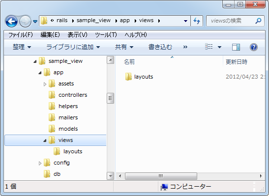
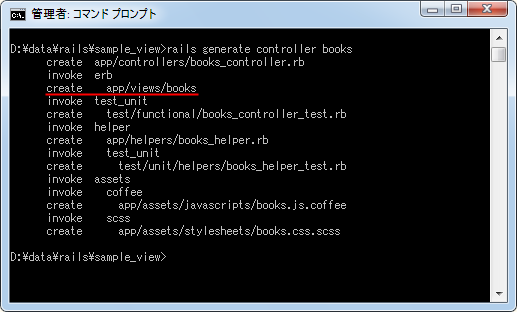
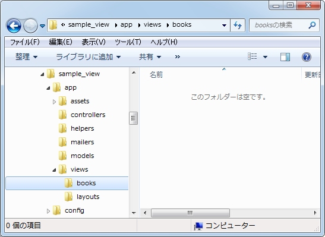
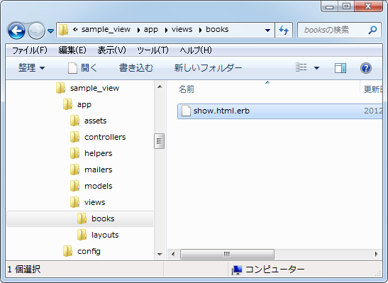
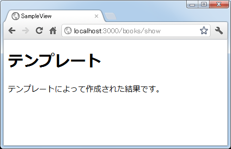

テンプレートの作成とアクションからの利用
ここではまずテンプレートの作成方法について改めて解説します。テンプレートの配置場所や作成手順、そしてアクションからどのようにテンプレートを利用するのかについて確認します。
1.テンプレートの設置場所
2.テンプレートの作成
3.出力結果の確認
テンプレートの設置場所
テンプレートは呼び出されるアクションが通常決まっており、テンプレート用のファイルは「アクション名.html.erb」というファイル名で作成します。アクションが呼び出された場合、明示的に呼び出さなくても自動的にアクション名の名前が付いたテンプレートが呼び出されて利用者へ返す結果が作成されます。(アクションメソッド内で直接テキストなどを出力する処理をしていれば別です)。
テンプレートを保存する場所は「app/views/コントロール名/アクション名.html.erb」となります。

現在はアプリケーションを作成した直後なので「app/views」ディレクトリしかありませんが、「rails generate controller」コマンドを使ってコントローラを作成すると自動的に「app/vies」ディレクトリ以下に作成したコントローラ名のディレクトリが作成されます。
ではサンプル用に作成したアプリケーションに「books」コントロールを追加してみます。
rails generate controller books

上記のようにコントローラを作成すると「create app/views/books」が実行されてテンプレートを配置するためのディレクトリが自動的に作成されます。

「books」コントローラの中に作成する「アクション」から呼び出すテンプレートは、このディレクトリの中に配置していきます。
テンプレートの作成
それではテンプレートを作成してみます。まずはアクションの方から作成します。先程作成したコントローラクラスのファイル(app/controllers/books_controller.rb)を開き、次のように記述して下さい。
class BooksController < ApplicationController def show end end
「show」アクションを定義しました。メソッドの中は何も記述されていませんが「アクションからテンプレートを呼び出す」で解説した通り、メソッドの中で出力する処理を行っていない場合は、アクション名が付いたテンプレートが自動的に呼び出されます。
では次に「show」アクションから呼び出すテンプレートを作成します。「books」コントロールに含まれる「show」アクションから呼び出されるテンプレートのため、ファイル名は「app/views/books/show.html.erb」となります。
テンプレートは利用者に返す結果を作成するため使います。通常はHTMLページが作成され、利用者のブラウザに表示されることになります。例えば何か情報を検索するリクエストを利用者が送信した場合、アクションとモデルが検索結果をデータベースから探し出し、そのデータをアクションから受け取りHTMLページの形に整形するのがテンプレートの役目です。また情報の登録を行うリクエストを利用者が送信した場合、テンプレートは「登録しました」といあらかじめ作成されたHTMLページを単に返す場合もあります。
アクションからデータを受け取る方法は別のページで確認します。ここでは簡単な結果を返すようなテンプレートを作成してみます。
<h1>テンプレート</h1> <p> テンプレートによって作成された結果です。 </p>

HTMLページといいながらHTMLページのヘッダやフッタの部分がありません。実はレイアウトテンプレートと呼ばれるものが別途用意されており、HTMLページのヘッダやフッタ部分はそちらに記載されています。そして個別に作成したテンプレートはレイアウトテンプレートの中に読み込まれる仕組みになっています。その為ヘッダやフッタ部分を記載する必要がありません。こちらは次のページで詳しく解説します。
最後にルーティングの設定を行います。「config/routes.rb」ファイルを次のように書き換えて下さい。
SampleView::Application.routes.draw do get "books/show" end
これで準備は完了です。
出力結果の確認
では実際にアクションを呼び出してどのような結果が返ってくるのかを確認してみます。アプリケーションを起動し、ブラウザから「http://localhost:3000/books/show」へアクセスして下さい。すると次のように表示されます。

アクションが呼び出され、アクションからテンプレートが呼び出されてHTMLページが作成され、利用者へ返されてブラウザへ表示されました。では次のページ以降でテンプレートの使い方について詳しく見ていきます。
( Written by Tatsuo Ikura )

著者 / TATSUO IKURA
初心者～中級者の方を対象としたプログラミング方法や開発環境の構築の解説を行うサイトの運営を行っています。